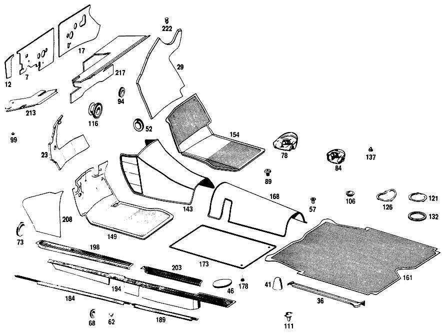

| № | Артикул | Название | Кол. | Примечание | Ограничение |
|---|---|---|---|---|---|
| 7 | A 110 682 19 20 | ИЗОЛЯЦИЯ | 1 | COWL, ENGINE COMPARTMENT, LEFT 3X542X277 MM Рулевое управление: Влево | |
| 12 | A 110 682 07 20 | ИЗОЛЯЦИЯ | - | ||
| 17 | A 110 682 20 20 | ИЗОЛЯЦИЯ | 1 | COWL, ENGINE COMPARTMENT, RIGHT 3X320X630 MM Рулевое управление: Влево | |
| 23 | A 110 680 09 25 | ШУМОИЗОЛЯЦИЯ | - | Рулевое управление: Влево | |
| 23 | A 000 983 22 91 | ПАПКА | 1 | ПЕРЕГОРОДКА, СЛЕВА, В ПРОСТР. ДЛЯ НОГ СПЕРЕДИ Рулевое управление: Влево | |
| 29 | A 110 680 02 25 | ШУМОИЗОЛЯЦИЯ | 1 | ПЕРЕГОРОДКА, СПРАВА, В ПРОСТР. ДЛЯ НОГ СПЕРЕДИ Рулевое управление: Влево [005] 20/50,22/52 UP TO CHASSIS 061792 | |
| 36 | A 110 683 01 24 | НАКЛАДКА | 1 | В БАГАЖ. ОТДЕЛЕНИИ СЛЕВА | |
| 41 | A 110 683 03 36 | ПАНЕЛЬ | 2 | БАМПЕР ЗАДНИЙ | |
| 46 | A 110 683 00 10 | Крышка | 2 | [002] UP TO CHASSIS 049461 EXCEPT FOR,SEE FOOTN.43 [043] 043110, 043809, 048666, 048731, 048775, 048830, 048832, 048947, 048961, 048998, 049002, 049008, 049074, 049079, 049455, 049456, 049458. | |
| 46 | A 110 683 00 10 | Крышка | 1 | [003] FROM CHASSIS 049462 ALSO INSTALLED ON,SEE FOOTN.43 [043] 043110, 043809, 048666, 048731, 048775, 048830, 048832, 048947, 048961, 048998, 049002, 049008, 049074, 049079, 049455, 049456, 049458. | |
| 52 | A 110 987 00 45 | КОЛПАЧОК | 1 | КОНТРОЛЬ УРОВНЯ МАСЛА В КОРОБКЕ ПЕРЕДАЧ [008] UP TO CHASSIS 055266 | |
| 57 | A 000 997 65 81 | КАБ. ВТУЛКА | 2 | TO PLUG WATER DRAIN HOLES IN FLOOR, REAR SEAT BENCH CUSHION MOUNTING | |
| 62 | A 110 987 00 39 | Пробка | - | 10mm | |
| 62 | A 000 997 33 20 | Запорная крышка | 12 | TO PLUG WATER DRAIN HOLES BELOW FRONT & REAR SEATS; 10 MM | |
| 68 | A 113 987 00 44 | Диск | 4 | TO PLUG WATER DRAIN HOLES ON THE LEFT & RIGHT BELOW REAR SEAT; 20.5 MM | |
| 73 | A 110 987 07 44 | Запорная шайба | 2 | BLINKER LAMP CABLE PASSAGE THRU FRONT PANEL PILLAR; 34 MM | |
| 78 | A 110 899 04 08 | ПАНЕЛЬ | - | ||
| 78 | A 108 899 01 08 | Крышка | 2 | ГНЕЗДО КРЕПЛ. ДОМКРАТА/ПОДЪЕМНИКА СПЕРЕДИ | |
| 84 | A 110 899 03 08 | ПАНЕЛЬ | - | ||
| 84 | A 108 899 00 08 | Крышка | 2 | ПОДДОМКРАТНИК ЗАДНИЙ | |
| 89 | A 000 990 13 22 | болт | 2 | с INCH THREAD 7/16" [010] FROM CHASSIS 067458 EXCEPT FOR,SEE FOOTN.44 ALSO INSTALLED ON,SEE FOOTN.45 [044] 067475, 067553, 067554, 067556- 067558. [045] 067436, 067438, 067440, 067444, 067446, 067448- 067452, 067454- 067456. | |
| 94 | A 000 987 02 44 | Запорная шайба | - | ||
| 99 | A 111 987 12 15 | ЗАГЛУШКА | - | ||
| 99 | A 000 987 18 40 | Резиновый буфер | 12 | ВОДОСТОК НИШИ ЗАПАСН. КОЛЕСА | |
| 106 | A 110 987 06 44 | Запорная шайба | 2 | AT REAR PILLAR,INSIDE TOP [012] FROM CHASSIS 060826 | |
| 106 | A 110 987 06 44 | Запорная шайба | 2 | НА ЛОНЖЕРОНЕ СЗАДИ [012] FROM CHASSIS 060826 | |
| 111 | A 111 997 12 81 | втулка | 2 | WATER DRAIN, AT SPARE WHEEL RECESS | |
| 116 | A 110 997 12 81 | резиновая втулка | - | Рулевое управление: Вправо | |
| 121 | A 110 683 01 10 | КРЫШКА | - | ||
| 121 | A 123 683 00 10 | Крышка | 2 | ПОЛ БАГАЖНОГО ОТДЕЛЕНИЯ | |
| 126 | A 110 683 02 10 | КРЫШКА | - | ||
| 126 | A 123 683 00 10 | Крышка | 2 | ЗАДН. ПОЛ | |
| 132 | A 110 683 01 98 | УПЛОТНИТЕЛЬ | - | ||
| 132 | A 003 989 54 85 | Уплотнительная лента | 4 | COVER TO REAR FLOOR AND TO LUGGAGE COMPARTMENT FLOOR | |
| 137 | A 000 987 92 40 | Резиновый буфер | 2 | HOLES IN REAR LID | |
| 143 | A 111 680 03 45 | НАСТИЛ | 1 | TUNNEL,FRONT FLOOR Рулевое управление: Влево [402] БОЛЬШЕ НЕ ПОСТАВЛЯЕТСЯ [013] WHEN ORDERING STATE COLOR AND CHASSIS NO. | |
| 149 | A 110 684 17 02 | НАСТИЛ | - | Рулевое управление: Влево | |
| 149 | A 108 684 01 02 | НАСТИЛ | 1 | ПОЛ ВОДИТЕЛЯ СЛЕВА Рулевое управление: Влево [006] FROM CHASSIS 061793 | |
| 154 | A 110 684 18 02 | НАСТИЛ | - | Рулевое управление: Влево | |
| 154 | A 108 684 02 02 | НАСТИЛ | 1 | ПОЛ ВОДИТЕЛЯ,СПРАВА Рулевое управление: Влево [006] FROM CHASSIS 061793 | |
| 161 | A 110 684 01 05 | НАСТИЛ | - | ||
| 161 | A 108 684 01 05 | НАСТИЛ | 1 | ПОЛ БАГАЖНИКА | |
| 168 | A 111 680 05 45 | НАСТИЛ | 1 | ТУННЕЛЬ ЗАДН.ЧАСТИ [402] БОЛЬШЕ НЕ ПОСТАВЛЯЕТСЯ [013] WHEN ORDERING STATE COLOR AND CHASSIS NO. [016] FROM CHASSIS 014932 ALSO INSTALLED ON SEE FOOTN. 47 [047] 014828, 014833, 014836, 014837, 014839- 014842, 014851- 014858, 014861- 014870, 014873, 014875- 014883, 014885, 014887- 014891, 014893, 014894, 014896- 014900, 014906- 014916, 014918, 014924- 014928, 014930. | |
| 173 | A 111 680 01 41 | НАСТИЛ | 2 | ЛЕВЫЙ И ПРАВЫЙ [402] БОЛЬШЕ НЕ ПОСТАВЛЯЕТСЯ [013] WHEN ORDERING STATE COLOR AND CHASSIS NO. | |
| 178 | A 136 988 09 81 | Кнопка-застежка | - | ||
| 178 | A 000 988 84 81 | Кнопка-застежка | 4 | КОВРИК НА ПОЛУ ЗАДН. ЧАСТИ | |
| 184 | A 110 686 05 36 | ПЛАНКА | - | ||
| 184 | A 110 686 09 36 | ПЛАНКА | 1 | FRONT DOOR,LEFT BOTTOM | |
| 189 | A 110 686 07 36 | ПЛАНКА | - | ||
| 189 | A 110 686 09 36 | ПЛАНКА | 1 | REAR DOOR,LEFT BOTTOM | |
| 194 | A 110 686 17 80 | НАСТИЛ | - | ||
| 194 | A 108 686 09 80 | НАСТИЛ | 1 | ПОРОГ ВНУТРИ СЛЕВА | |
| 198 | A 110 686 13 80 | НАСТИЛ | - | ||
| 198 | A 110 686 23 80 | НАСТИЛ | 1 | LEFT FRONT ENTRANCE,BELOW FRONT DOOR | |
| 203 | A 110 686 15 80 | НАСТИЛ | - | ||
| 203 | A 110 686 25 80 | НАСТИЛ | 1 | LEFT REAR ENTRANCE,BELOW REAR DOOR | |
| 208 | A 110 688 03 06 | Обшивка | 1 | ПЕРЕДН. СТЕНКА СБОКУ СЛЕВА | |
| 213 | A 112 680 07 17 | ПАНЕЛЬ | 1 | ПОД ПЕРЕДН. ПАНЕЛЬЮ, СЛЕВА Рулевое управление: Влево [006] FROM CHASSIS 061793 | |
| 217 | A 110 680 26 17 | ПАНЕЛЬ | 1 | ПОД ПЕРЕДН. ПАНЕЛЬЮ, СПРАВА Рулевое управление: Влево | |
| 222 | A 000 988 23 78 | Скоба | 2 | ||
| 226 | A 110 689 03 91 | ВЕЩЕВОЙ ЯЩИК | 1 | Рулевое управление: Влево | |
| 231 | A 000 994 25 45 | Пружинная гайка самореза | 8 | ВЕЩЕВОЙ ЯЩИК НА ПЕРЕДНЕЙ ПАНЕЛИ; 3.3MM [019] UP TO CHASSIS 011849 ALSO INSTALLED IN 011868 EXCEPT FOR 011837,011845 | |
| 231 | A 000 994 25 45 | Пружинная гайка самореза | 5 | ВЕЩЕВОЙ ЯЩИК НА ПЕРЕДНЕЙ ПАНЕЛИ; 3.3MM [020] FROM CHASSIS 011850 EXCEPT FOR 011868 ALSO INSTALLED ON 011837,011845 | |
| 236 | A 112 689 01 83 | КРЫШКА | 1 | Рулевое управление: Влево [020] FROM CHASSIS 011850 EXCEPT FOR 011868 ALSO INSTALLED ON 011837,011845 | |
| 241 | A 110 689 01 70 | РУЧКА | 1 | КРЫШКА ВЕЩЕВОГО ЯЩИКА Рулевое управление: Влево | |
| 246 | A 111 987 08 40 | РЕЗИНОВЫЙ УПОР | 1 | КРЫШКА ВЕЩЕВОГО ЯЩИКА НА ПРИБОРНОЙ ПАНЕЛИ | |
| 250 | A 110 689 00 01 | Замок | 1 | SAME LOCK AS OF REAR LID [080] WHEN ORDERING,STATE LETTER AND NUMBER OF LOCK | |
| 254 | A 000 766 10 06 | - Ключ | 2 | MARKED с LETTER "K" [402] БОЛЬШЕ НЕ ПОСТАВЛЯЕТСЯ | |
| 259 | A 000 987 97 40 | Резиновый буфер | 1 | КРЫШКА ВЕЩЕВОГО ЯЩИКА [020] FROM CHASSIS 011850 EXCEPT FOR 011868 ALSO INSTALLED ON 011837,011845 | |
| 264 | A 111 680 05 51 | ШАРНИР | 2 | КРЫШКА ВЕЩЕВОГО ЯЩИКА [020] FROM CHASSIS 011850 EXCEPT FOR 011868 ALSO INSTALLED ON 011837,011845 | |
| 269 | A 111 689 00 32 | СКОБА | 1 | КРЫШКА ВЕЩЕВОГО ЯЩИКА НА ПРИБОРНОЙ ПАНЕЛИ | |
| 273 | A 110 993 09 01 | пружина | 1 | КРЫШКА ВЕЩЕВОГО ЯЩИКА НА ПРИБОРНОЙ ПАНЕЛИ | |
| 279 | A 111 680 11 06 | Обшивка | 1 | СВЕРХУ И СНИЗУ Рулевое управление: Влево [013] WHEN ORDERING STATE COLOR AND CHASSIS NO. | |
| 294 | A 110 993 03 10 | ПРУЖИНА | 2 | CAP TO INSTRUMENT CLUSTER [026] FROM CHASSIS 001327-011849 | |
| 299 | A 110 689 01 72 | МОЛДИНГ | - | Рулевое управление: Влево | |
| 299 | A 110 689 07 72 | МОЛДИНГ | 1 | ABOVE HEATER NOZZLE,TOP LEFT Рулевое управление: Влево | |
| 304 | A 110 689 02 72 | МОЛДИНГ | 1 | ABOVE HEATER NOZZLE,TOP RIGHT Рулевое управление: Влево | |
| 308 | A 110 689 00 72 | МОЛДИНГ | 1 | ABOVE HEATER NOZZLE,TOP CENTRAL Рулевое управление: Влево | |
| 313 | A 000 990 07 50 | ГАЙКА | 7 | ДЕКОР. ПЛАНКА НА ПЕРЕДН. ПАНЕЛИ | |
| 318 | A 110 680 03 71 | МОЛДИНГ | - | Рулевое управление: Влево | |
| 324 | A 111 680 05 96 | КРЫШКА | - | [042] UP TO CHASSIS 073326 | |
| 329 | A 128 817 00 14 | ОБОЗНАЧЕНИЕ МОДЕЛИ | 1 | "220 SE" | |
| 333 | A 110 689 01 80 | Декоративная розетка | 1 | STEERING LOCK OPENING [029] FROM CHASSIS 017605 | |
| 338 | A 110 689 00 98 | Резиновое кольцо | 1 | [029] FROM CHASSIS 017605 | |
| 345 | A 111 680 01 87 | ПЕРЕДНЯЯ ПАНЕЛЬ | 1 | ДВУХЧАСТН. Рулевое управление: Влево [411] ПРИ ЗАКАЗЕ УКАЗАТЬ ЦВЕТ: | |
| 351 | A 111 680 33 83 | Обшивка | 1 | ПРИБОРН. ПАНЕЛЬ, ЦЕНТР. Рулевое управление: Влево | |
| 358 | A 110 680 00 17 | ПАНЕЛЬ | - | ||
| 462 | A 110 987 05 44 | Запорная шайба | - | 32 MM | |
| A 000 983 30 91 | ПАПКА | 1 | ПОЛ ВОДИТЕЛЯ СЛЕВА 547 X 560 MM [404] ЗАКАЗЫВАТЬ ПОГОННЫМИ МЕТРАМИ | ||
| A 000 983 30 91 | ПАПКА | 1 | ПОЛ ВОДИТЕЛЯ,СПРАВА 540 X 555 MM [404] ЗАКАЗЫВАТЬ ПОГОННЫМИ МЕТРАМИ | ||
| A 000 983 30 91 | ПАПКА | 1 | К ТУННЕЛЮ ДНИЩА СО СТОРОНЫ ВОДИТЕЛЯ 702 X 740 MM [404] ЗАКАЗЫВАТЬ ПОГОННЫМИ МЕТРАМИ | ||
| A 000 983 30 91 | ПАПКА | 1 | К ТУННЕЛЮ ДНИЩА СО СТОРОНЫ ВОДИТЕЛЯ 742 X 745 MM [404] ЗАКАЗЫВАТЬ ПОГОННЫМИ МЕТРАМИ | ||
| A 000 983 30 91 | ПАПКА | 1 | TUNNEL BETWEEN HEATING DUCT 137X192 MM [404] ЗАКАЗЫВАТЬ ПОГОННЫМИ МЕТРАМИ [001] UP TO CHASSIS 022646 | ||
| A 000 983 30 91 | ПАПКА | 1 | НА ПЕРЕГОРОДКЕ 129 X 224 MM [404] ЗАКАЗЫВАТЬ ПОГОННЫМИ МЕТРАМИ | ||
| A 000 983 30 91 | ПАПКА | 1 | НА ПЕРЕГОРОДКЕ 730 X 737 MM [404] ЗАКАЗЫВАТЬ ПОГОННЫМИ МЕТРАМИ | ||
| A 000 983 30 91 | ПАПКА | 1 | НА ПЕРЕГОРОДКЕ 700 X 743 MM [404] ЗАКАЗЫВАТЬ ПОГОННЫМИ МЕТРАМИ | ||
| A 000 983 30 91 | ПАПКА | 1 | ПЕРЕГОРОДКА, СНИЗУ СЛЕВА 493 X 510 MM [404] ЗАКАЗЫВАТЬ ПОГОННЫМИ МЕТРАМИ | ||
| A 000 983 30 91 | ПАПКА | 1 | ПЕРЕГОРОДКА, СНИЗУ СПРАВА 562 X 640 MM [404] ЗАКАЗЫВАТЬ ПОГОННЫМИ МЕТРАМИ | ||
| A 000 983 30 91 | ПАПКА | 1 | ПЕРЕГОРОДКА, СВЕРХУ СЛЕВА 370 X 496 MM [404] ЗАКАЗЫВАТЬ ПОГОННЫМИ МЕТРАМИ | ||
| A 000 983 30 91 | ПАПКА | 1 | ПЕРЕГОРОДКА, СВЕРХУ СПРАВА 395 X 571 MM [404] ЗАКАЗЫВАТЬ ПОГОННЫМИ МЕТРАМИ | ||
| A 000 983 30 91 | ПАПКА | 1 | БАК ДЛЯ ВОДЫ 110 X 294 MM [404] ЗАКАЗЫВАТЬ ПОГОННЫМИ МЕТРАМИ | ||
| A 000 983 30 91 | ПАПКА | 2 | БАК ДЛЯ ВОДЫ 205 X 703 MM [404] ЗАКАЗЫВАТЬ ПОГОННЫМИ МЕТРАМИ | ||
| A 110 682 05 13 | ШУМОИЗОЛЯЦИЯ | - | |||
| A 110 682 19 13 | ШУМОИЗОЛЯЦИЯ | 1 | FRONT TUNNEL,LEFT TOP 20 MM | ||
| A 110 682 06 13 | ШУМОИЗОЛЯЦИЯ | - | |||
| A 110 682 20 13 | ШУМОИЗОЛЯЦИЯ | 1 | FRONT TUNNEL,RIGHT TOP 279X610 MM | ||
| A 110 682 08 13 | ШУМОИЗОЛЯЦИЯ | - | |||
| A 110 682 13 13 | ШУМОИЗОЛЯЦИЯ | 1 | ТУНЕЛЬ СПЕРЕДИ 110 X 154 MM | ||
| A 110 682 07 13 | ШУМОИЗОЛЯЦИЯ | - | |||
| A 110 682 18 13 | ШУМОИЗОЛЯЦИЯ | - | |||
| A 108 682 11 13 | ШУМОИЗОЛЯЦИЯ | 1 | TUNNEL BETWEEN HEATING DUCT 190 X 290 MM | ||
| A 000 983 30 92 | ГРИБОК | - | ЧЕРНЫЙ 2mm [402] БОЛЬШЕ НЕ ПОСТАВЛЯЕТСЯ | ||
| A 000 983 29 91 | ПАПКА | 2 | НА ПЕРЕДН. СТЕНКЕ СБОКУ СЛЕВА И СПРАВА 425 X 520 MM | ||
| A 000 983 29 91 | ПАПКА | 2 | REAR FLOOR,BOTTOM 560 X 740 MM | ||
| A 000 983 29 91 | ПАПКА | 2 | ПОД ЗАДНИМ СИДЕНЬЕМ 635 X 665 MM | ||
| A 000 983 29 91 | ПАПКА | 1 | CENTRAL TUNNEL,BOTTOM 490X750 MM | ||
| A 000 983 29 91 | ПАПКА | 2 | ПОЛ БАГАЖНИКА 85 X 640 MM | ||
| A 000 983 29 91 | ПАПКА | 1 | ПОЛ БАГАЖНИКА 192 X 595 MM | ||
| A 000 983 29 91 | ПАПКА | 2 | ЗАДН. СТЕНКА КУЗОВА 483 X 713 MM | ||
| A 000 983 29 91 | ПАПКА | 2 | СТОЙКА ЗАДНЯЯ 302 X 700 MM [039] FROM CHASSIS 051261 | ||
| A 000 983 29 91 | ПАПКА | - | |||
| A 000 983 96 91 | ПАПКА | 2 | НА РАМЕ КРЫШИ СБОКУ 160 X 670 MM [039] FROM CHASSIS 051261 | ||
| A 000 983 96 91 | ПАПКА | 1 | НА РАМЕ КРЫШИ СЗАДИ 170 X 1070 MM [039] FROM CHASSIS 051261 | ||
| A 000 983 21 92 | ГРИБОК | 2 | REAR FLOOR,TOP 545 X 735 MM [404] ЗАКАЗЫВАТЬ ПОГОННЫМИ МЕТРАМИ | ||
| A 000 983 21 92 | ГРИБОК | 1 | CENTRAL TUNNEL,REAR,REAR PART 171X408 [404] ЗАКАЗЫВАТЬ ПОГОННЫМИ МЕТРАМИ | ||
| A 000 983 21 92 | ГРИБОК | 1 | CENTRAL TUNNEL,REAR,FRONT PART 160X571 [404] ЗАКАЗЫВАТЬ ПОГОННЫМИ МЕТРАМИ | ||
| A 000 983 22 92 | ГРИБОК | 2 | LEFT AND RIGHT FRONT FLOOR,TOP 550 X 560 MM [404] ЗАКАЗЫВАТЬ ПОГОННЫМИ МЕТРАМИ | ||
| A 000 983 00 98 | ПОРОЛОН | - | |||
| A 000 983 35 98 | ПОРОЛОН | 2 | НА ЗАДН. СТОЙКЕ 340 X 700 MM [404] ЗАКАЗЫВАТЬ ПОГОННЫМИ МЕТРАМИ | ||
| A 000 983 35 98 | ПОРОЛОН | 1 | ЗАДН. СТЕКЛО СНИЗУ 84X1800 MM [404] ЗАКАЗЫВАТЬ ПОГОННЫМИ МЕТРАМИ | ||
| A 000 983 35 98 | ПОРОЛОН | 1 | НА РАМЕ КРЫШИ СЗАДИ 187 X 984 MM [404] ЗАКАЗЫВАТЬ ПОГОННЫМИ МЕТРАМИ [039] FROM CHASSIS 051261 | ||
| A 000 983 35 98 | ПОРОЛОН | 1 | НА РАМЕ КРЫШИ СЗАДИ 100 X 1000 MM [404] ЗАКАЗЫВАТЬ ПОГОННЫМИ МЕТРАМИ | ||
| A 000 983 43 92 | ГРИБОК | 2 | |||
| A 000 983 41 92 | ГРИБОК | - | |||
| A 000 983 01 98 | ПОРОЛОН | - | |||
| A 000 983 35 98 | ПОРОЛОН | 3 | для BOWS NOS.1,3,4 VIEWED FROM FRONT 70X1120 MM [404] ЗАКАЗЫВАТЬ ПОГОННЫМИ МЕТРАМИ | ||
| A 000 983 35 98 | ПОРОЛОН | 2 | для BOWS NOS.2 AND 5 VIEWED FROM FRONT 70X1160 MM [404] ЗАКАЗЫВАТЬ ПОГОННЫМИ МЕТРАМИ | ||
| A 000 983 33 91 | ПАПКА | - | Рулевое управление: Влево | ||
| A 110 682 00 20 | ИЗОЛЯЦИЯ | - | Рулевое управление: Влево | ||
| A 110 682 03 20 | ИЗОЛЯЦИЯ | - | Рулевое управление: Вправо | ||
| A 110 682 16 20 | ИЗОЛЯЦИЯ | - | Рулевое управление: Вправо | ||
| A 112 680 09 25 | ШУМОИЗОЛЯЦИЯ | 1 | COWL, ENGINE COMPARTMENT, LEFT 3X563X313 MM Рулевое управление: Вправо | ||
| A 110 682 01 20 | ИЗОЛЯЦИЯ | - | |||
| A 110 682 23 20 | ИЗОЛЯЦИЯ | - | |||
| A 115 682 02 04 | ШУМОИЗОЛЯЦИЯ | 1 | COWL, ENGINE COMPARTMENT, LEFT 3X125X175 MM | ||
| A 110 682 02 20 | ИЗОЛЯЦИЯ | - | Рулевое управление: Влево | ||
| A 110 682 08 20 | ИЗОЛЯЦИЯ | - | Рулевое управление: Влево | ||
| A 110 682 04 20 | ИЗОЛЯЦИЯ | - | Рулевое управление: Вправо | ||
| A 110 682 18 20 | ИЗОЛЯЦИЯ | - | Рулевое управление: Вправо | ||
| A 112 680 10 25 | ШУМОИЗОЛЯЦИЯ | - | Рулевое управление: Вправо | ||
| A 000 983 22 91 | ПАПКА | 1 | COWL, ENGINE COMPARTMENT, RIGHT 3X551X286 MM Рулевое управление: Вправо [404] ЗАКАЗЫВАТЬ ПОГОННЫМИ МЕТРАМИ | ||
| A 000 983 00 98 | ПОРОЛОН | - | |||
| A 000 983 35 98 | ПОРОЛОН | 1 | 90X60;5 MM | ||
| A 110 680 01 25 | ШУМОИЗОЛЯЦИЯ | - | Рулевое управление: Влево | ||
| A 000 983 22 91 | ПАПКА | 1 | ПЕРЕГОРОДКА, СЛЕВА, В ПРОСТР. ДЛЯ НОГ СПЕРЕДИ Рулевое управление: Влево [002] UP TO CHASSIS 049461 EXCEPT FOR,SEE FOOTN.43 [043] 043110, 043809, 048666, 048731, 048775, 048830, 048832, 048947, 048961, 048998, 049002, 049008, 049074, 049079, 049455, 049456, 049458. | ||
| A 110 680 03 25 | ШУМОИЗОЛЯЦИЯ | - | Рулевое управление: Вправо | ||
| A 000 983 22 91 | ПАПКА | 1 | ПЕРЕГОРОДКА, СЛЕВА, В ПРОСТР. ДЛЯ НОГ СПЕРЕДИ Рулевое управление: Вправо [404] ЗАКАЗЫВАТЬ ПОГОННЫМИ МЕТРАМИ | ||
| A 110 680 06 25 | ШУМОИЗОЛЯЦИЯ | 1 | ПЕРЕГОРОДКА, СЛЕВА, В ПРОСТР. ДЛЯ НОГ СПЕРЕДИ Рулевое управление: Вправо [038] ON SPECIAL REQUEST,IN THE CASE OF VEHICLES EQUIPPED WITH RADIO | ||
| A 110 680 07 25 | ШУМОИЗОЛЯЦИЯ | 1 | ПЕРЕГОРОДКА, СПРАВА, В ПРОСТР. ДЛЯ НОГ СПЕРЕДИ Рулевое управление: Влево [038] ON SPECIAL REQUEST,IN THE CASE OF VEHICLES EQUIPPED WITH RADIO | ||
| A 110 680 04 25 | ШУМОИЗОЛЯЦИЯ | - | Рулевое управление: ВправоКоробка передач | ||
| A 000 983 22 91 | ПАПКА | 1 | ПЕРЕГОРОДКА, СПРАВА, В ПРОСТР. ДЛЯ НОГ СПЕРЕДИ Рулевое управление: ВправоКоробка передач [404] ЗАКАЗЫВАТЬ ПОГОННЫМИ МЕТРАМИ | ||
| A 110 680 08 25 | ШУМОИЗОЛЯЦИЯ | 1 | ПЕРЕГОРОДКА, СПРАВА, В ПРОСТР. ДЛЯ НОГ СПЕРЕДИ Рулевое управление: ВправоАвтоматическая коробка переключения передач | ||
| A 110 680 00 25 | ШУМОИЗОЛЯЦИЯ | - | Рулевое управление: Влево | ||
| A 000 983 22 91 | ПАПКА | 1 | FIRE WALL,CENTRAL,IN FRONT LEGROOM 2mm Рулевое управление: Влево [404] ЗАКАЗЫВАТЬ ПОГОННЫМИ МЕТРАМИ [007] UP TO CHASSIS 032200 | ||
| A 000 983 01 98 | ПОРОЛОН | - | |||
| A 000 983 35 98 | ПОРОЛОН | 1 | FIRE WALL,CENTRAL,IN FRONT LEGROOM 1000X1000 MM Рулевое управление: Влево [404] ЗАКАЗЫВАТЬ ПОГОННЫМИ МЕТРАМИ [007] UP TO CHASSIS 032200 | ||
| A 110 680 05 25 | ШУМОИЗОЛЯЦИЯ | 1 | FIRE WALL,CENTRAL,IN FRONT LEGROOM Рулевое управление: Вправо [007] UP TO CHASSIS 032200 | ||
| N 007982 005205 | Шуруп | 1 | INSULATION IN FIRE WALL Рулевое управление: Влево [005] 20/50,22/52 UP TO CHASSIS 061792 | ||
| N 007982 005205 | Шуруп | 2 | INSULATION IN FIRE WALL Рулевое управление: Вправо | ||
| A 000 990 17 42 | Диск | 1 | INSULATION IN FIRE WALL Рулевое управление: Влево [005] 20/50,22/52 UP TO CHASSIS 061792 | ||
| A 000 990 17 42 | Диск | 2 | INSULATION IN FIRE WALL Рулевое управление: Вправо | ||
| N 007983 004245 | Шуруп | 3 | INSULATION IN FIRE WALL Рулевое управление: Влево [005] 20/50,22/52 UP TO CHASSIS 061792 | ||
| N 007983 004245 | Шуруп | 2 | INSULATION IN FIRE WALL Рулевое управление: Вправо | ||
| N 900056 004506 | ПОТАЙНАЯ ШАЙБА | 3 | INSULATION IN FIRE WALL Рулевое управление: Влево [005] 20/50,22/52 UP TO CHASSIS 061792 | ||
| N 900056 004506 | ПОТАЙНАЯ ШАЙБА | 2 | INSULATION IN FIRE WALL Рулевое управление: Вправо | ||
| A 110 687 00 45 | КОЛПАЧОК | 1 | ДАТЧ.ИЗБЫТОЧ.ГАЗА Рулевое управление: ВправоАвтоматическая коробка переключения передач | ||
| A 110 683 03 10 | КРЫШКА | 1 | TUNNEL,KICK\-DOWN LINKAGE Автоматическая коробка переключения передач [402] БОЛЬШЕ НЕ ПОСТАВЛЯЕТСЯ | ||
| A 110 683 00 98 | УПЛОТНИТЕЛЬ | - | Автоматическая коробка переключения передач | ||
| A 110 683 02 98 | УПЛОТНИТЕЛЬ | - | Автоматическая коробка переключения передач | ||
| A 003 989 54 85 | Уплотнительная лента | 1 | TUNNEL,KICK\-DOWN LINKAGE Автоматическая коробка переключения передач | ||
| A 000 994 23 45 | предохранитель | 6 | КРЫШКА НА ТУННЕЛЕ; B4.2 S=1.25\-2.0 Автоматическая коробка переключения передач | ||
| N 007981 004318 | Шуруп | 6 | КРЫШКА НА ТУННЕЛЕ; 4,2X9,5 Автоматическая коробка переключения передач | ||
| A 111 683 51 36 | ПАНЕЛЬ | 1 | ПРИВОД КП НА ЦЕНТР. КОНС. Коробка передач | ||
| A 111 683 53 98 | УПЛОТНИТЕЛЬ | 1 | КОЖУХ Коробка передач | ||
| A 111 680 50 36 | ПАНЕЛЬ | 1 | ПРИВОД КП НА ЦЕНТР. КОНС. Коробка передач | ||
| A 111 680 50 73 | УПЛОТНИТЕЛЬ | 1 | Коробка передач | ||
| A 110 683 02 24 | НАКЛАДКА | 1 | В БАГАЖНИКЕ, СПРАВА | ||
| N 007983 004322 | Шуруп | 8 | LEDGE TO LUGGAGE COMPARTMENT | ||
| A 001 988 66 78 | СКОБА | 4 | LEDGE TO LUGGAGE COMPARTMENT | ||
| A 110 683 00 36 | ПАНЕЛЬ | - | |||
| A 001 988 44 78 | Скоба | 6 | [002] UP TO CHASSIS 049461 EXCEPT FOR,SEE FOOTN.43 [043] 043110, 043809, 048666, 048731, 048775, 048830, 048832, 048947, 048961, 048998, 049002, 049008, 049074, 049079, 049455, 049456, 049458. | ||
| A 001 988 44 78 | Скоба | 3 | [003] FROM CHASSIS 049462 ALSO INSTALLED ON,SEE FOOTN.43 [043] 043110, 043809, 048666, 048731, 048775, 048830, 048832, 048947, 048961, 048998, 049002, 049008, 049074, 049079, 049455, 049456, 049458. | ||
| A 136 984 02 52 | СТАКАН | - | |||
| A 110 683 00 28 | НАЛКАДКА СКОЛЬЗЯЩАЯ | 1 | ПЕДАЛЬ ГАЗА Рулевое управление: Вправо [402] БОЛЬШЕ НЕ ПОСТАВЛЯЕТСЯ | ||
| A 001 987 76 25 | Защита кромок | 1 | 85 MM Рулевое управление: Вправо [404] ЗАКАЗЫВАТЬ ПОГОННЫМИ МЕТРАМИ | ||
| N 007981 003237 | САМОРЕЗ | 5 | скользящая пластина Рулевое управление: Вправо | ||
| A 110 683 00 08 | ПАНЕЛЬ | - | TO PLUG WATER DRAIN HOLES IN FLOOR, REAR SEAT BENCH CUSHION MOUNTING [403] НЕ УСТАНОВЛЕНО | ||
| A 110 987 01 39 | РЕЗИНОВЫЙ УПОР | - | TO PLUG WATER DRAIN HOLES ON THE RIGHT BELOW FRONT SEAT [403] НЕ УСТАНОВЛЕНО | ||
| A 110 987 00 44 | ДИСК | - | |||
| A 110 987 03 44 | ДИСК | - | |||
| A 110 987 04 44 | ДИСК | - | |||
| A 000 987 19 44 | ДИСК | - | |||
| A 111 987 00 15 | ЗАГЛУШКА | - | |||
| A 111 987 00 15 | ЗАГЛУШКА | - | |||
| A 111 987 10 15 | ЗАГЛУШКА | - | |||
| A 000 990 12 22 | БОЛТ | - | |||
| A 126 990 07 22 | БОЛТ | 2 | с METRIC THREAD M 10 [009] UP TO CHASSIS 067457 ALSO INSTALLED ON,SEE FOOTN.44 EXCEPT FOR,SEE FOOTN.45 [044] 067475, 067553, 067554, 067556- 067558. [045] 067436, 067438, 067440, 067444, 067446, 067448- 067452, 067454- 067456. | ||
| A 110 987 08 44 | Диск | 1 | HOLE IN FRONT PANEL,RIGHT; 18.5 MM | ||
| A 000 987 04 15 | Пробка | 2 | HOLE IN OUTSIDE CENTRAL PIECE | ||
| A 110 987 02 44 | ДИСК | 2 | HOLE IN FRONT PANEL PILLAR [032] UP TO CHASSIS 007287 [081] VEHICLES HAVING NO SLIDING ROOF: | ||
| A 110 987 05 44 | Запорная шайба | - | 32 MM | ||
| A 000 997 40 20 | Запорная крышка | 2 | HOLE IN FRONT PANEL PILLAR; 30.5 MM [081] VEHICLES HAVING NO SLIDING ROOF: [033] FROM CHASSIS 007288 | ||
| A 000 997 40 20 | Запорная крышка | 2 | AT REAR PILLAR,INSIDE TOP; 30.5 MM [011] UP TO CHASSIS 060825 | ||
| A 000 997 40 20 | Запорная крышка | 2 | НА ЛОНЖЕРОНЕ СЗАДИ; 30.5 MM [011] UP TO CHASSIS 060825 | ||
| A 111 997 23 81 | КАБ. ВТУЛКА | - | Рулевое управление: Вправо | ||
| A 008 997 17 81 | втулка | 1 | ДЛЯ ЗАКРЫТИЯ ОТВЕРСТ.МОТОР.ЩИТА Рулевое управление: Вправо | ||
| A 000 987 18 40 | Резиновый буфер | 1 | КОЛЕСН. АРКА СПЕРЕДИ СПРАВА Рулевое управление: Вправо | ||
| A 110 997 09 41 | УПЛОТНИТ. КОЛЬЦО | - | |||
| N 007981 004243 | Шуруп | - | |||
| N 000000 002062 | Шуруп | 12 | COVER TO REAR FLOOR AND TO LUGGAGE COMPARTMENT FLOOR | ||
| A 110 684 00 13 | НАСТИЛ | - | |||
| A 111 680 01 45 | НАСТИЛ | - | |||
| A 111 680 08 45 | НАСТИЛ | 1 | TUNNEL,FRONT FLOOR Рулевое управление: Вправо [402] БОЛЬШЕ НЕ ПОСТАВЛЯЕТСЯ [013] WHEN ORDERING STATE COLOR AND CHASSIS NO. | ||
| A 111 680 10 45 | НАСТИЛ | 1 | TUNNEL,FRONT FLOOR Рулевое управление: ВлевоКоробка передач [402] БОЛЬШЕ НЕ ПОСТАВЛЯЕТСЯ [013] WHEN ORDERING STATE COLOR AND CHASSIS NO. | ||
| A 111 680 11 45 | НАСТИЛ | 1 | Рулевое управление: ВправоКоробка передач [402] БОЛЬШЕ НЕ ПОСТАВЛЯЕТСЯ [013] WHEN ORDERING STATE COLOR AND CHASSIS NO. | ||
| A 111 997 10 81 | КАБ. ВТУЛКА | 1 | РЫЧАГ ПЕРЕКЛЮЧЕНИЯ Коробка передач | ||
| A 110 684 01 02 | НАСТИЛ | - | Рулевое управление: Влево | ||
| A 110 684 05 02 | НАСТИЛ | - | Рулевое управление: Влево | ||
| A 110 684 09 02 | НАСТИЛ | - | Рулевое управление: Влево | ||
| A 110 684 13 02 | НАСТИЛ | 1 | ПОЛ ВОДИТЕЛЯ СЛЕВА Рулевое управление: Влево [005] 20/50,22/52 UP TO CHASSIS 061792 | ||
| A 110 684 02 02 | НАСТИЛ | - | Рулевое управление: Влево | ||
| A 110 684 06 02 | НАСТИЛ | - | Рулевое управление: Влево | ||
| A 110 684 10 02 | НАСТИЛ | 1 | ПОЛ ВОДИТЕЛЯ,СПРАВА Рулевое управление: Влево [005] 20/50,22/52 UP TO CHASSIS 061792 | ||
| A 110 684 03 02 | НАСТИЛ | - | Рулевое управление: Вправо | ||
| A 110 684 07 02 | НАСТИЛ | - | Рулевое управление: Вправо | ||
| A 108 684 03 02 | НАСТИЛ | 1 | ПОЛ ВОДИТЕЛЯ СЛЕВА Рулевое управление: Вправо | ||
| A 110 684 04 02 | НАСТИЛ | - | Рулевое управление: Вправо | ||
| A 110 684 08 02 | НАСТИЛ | - | Рулевое управление: Вправо | ||
| A 110 684 16 02 | НАСТИЛ | 1 | ПОЛ ВОДИТЕЛЯ,СПРАВА Рулевое управление: Вправо | ||
| A 000 988 23 80 | КНОПКА | 4 | MAT TO FLOOR [005] 20/50,22/52 UP TO CHASSIS 061792 | ||
| N 007983 004245 | Шуруп | 4 | MAT TO FLOOR [005] 20/50,22/52 UP TO CHASSIS 061792 | ||
| A 000 988 22 80 | КНОПКА | - | |||
| A 000 988 14 80 | Кнопка | 2 | MAT TO FLOOR [005] 20/50,22/52 UP TO CHASSIS 061792 | ||
| N 007983 004236 | Шуруп | 2 | MAT TO FLOOR [005] 20/50,22/52 UP TO CHASSIS 061792 | ||
| N 000125 005306 | ШАЙБА | - | [415] ПРИМЕЧ. ПО ЗАМЕНЕ ПРИМЕНИМО ТОЛЬКО ДЛЯ СТОЯЩИХ РЯДОМ ПОЗИЦИЙ | ||
| A 136 990 11 40 | ШАЙБА | - | |||
| A 126 885 00 10 | Диск | 2 | MAT TO FLOOR [005] 20/50,22/52 UP TO CHASSIS 061792 | ||
| A 110 684 00 05 | НАСТИЛ | - | |||
| A 110 684 01 06 | НАСТИЛ | - | |||
| A 110 684 05 06 | НАСТИЛ | 1 | RECESS IN LUGGAGE COMPARTMENT | ||
| A 111 680 00 45 | НАСТИЛ | 1 | ТУННЕЛЬ ЗАДН.ЧАСТИ [402] БОЛЬШЕ НЕ ПОСТАВЛЯЕТСЯ [013] WHEN ORDERING STATE COLOR AND CHASSIS NO. [015] UP TO CHASSIS 014931 EXCEPT FOR,SEE FOOTN, 47 [047] 014828, 014833, 014836, 014837, 014839- 014842, 014851- 014858, 014861- 014870, 014873, 014875- 014883, 014885, 014887- 014891, 014893, 014894, 014896- 014900, 014906- 014916, 014918, 014924- 014928, 014930. | ||
| A 111 680 02 41 | НАСТИЛ | - | |||
| N 007981 003257 | Шуруп | 4 | КОВРИК НА ПОЛУ ЗАДН. ЧАСТИ | ||
| A 111 990 10 40 | Диск | 4 | КОВРИК НА ПОЛУ ЗАДН. ЧАСТИ | ||
| A 110 686 01 36 | ПЛАНКА | - | |||
| A 110 686 02 36 | ПЛАНКА | - | |||
| A 110 686 06 36 | ПЛАНКА | - | |||
| A 110 686 10 36 | ПЛАНКА | 1 | FRONT DOOR,RIGHT BOTTOM | ||
| N 007983 004327 | САМОРЕЗ | 14 | |||
| A 110 686 03 36 | ПЛАНКА | - | |||
| A 110 686 04 36 | ПЛАНКА | - | |||
| A 110 686 08 36 | ПЛАНКА | - | |||
| A 110 686 10 36 | ПЛАНКА | 1 | REAR DOOR,RIGHT BOTTOM | ||
| N 007983 004327 | САМОРЕЗ | 8 | |||
| A 110 686 07 80 | НАСТИЛ | - | [015] UP TO CHASSIS 014931 EXCEPT FOR,SEE FOOTN, 47 [047] 014828, 014833, 014836, 014837, 014839- 014842, 014851- 014858, 014861- 014870, 014873, 014875- 014883, 014885, 014887- 014891, 014893, 014894, 014896- 014900, 014906- 014916, 014918, 014924- 014928, 014930. [409] ПРИ МОНТАЖЕ ПОДОГНАТЬ ПО МЕСТУ | ||
| A 110 686 09 80 | НАСТИЛ | - | [015] UP TO CHASSIS 014931 EXCEPT FOR,SEE FOOTN, 47 [047] 014828, 014833, 014836, 014837, 014839- 014842, 014851- 014858, 014861- 014870, 014873, 014875- 014883, 014885, 014887- 014891, 014893, 014894, 014896- 014900, 014906- 014916, 014918, 014924- 014928, 014930. [409] ПРИ МОНТАЖЕ ПОДОГНАТЬ ПО МЕСТУ | ||
| A 110 686 11 80 | НАСТИЛ | - | [015] UP TO CHASSIS 014931 EXCEPT FOR,SEE FOOTN, 47 [047] 014828, 014833, 014836, 014837, 014839- 014842, 014851- 014858, 014861- 014870, 014873, 014875- 014883, 014885, 014887- 014891, 014893, 014894, 014896- 014900, 014906- 014916, 014918, 014924- 014928, 014930. [409] ПРИ МОНТАЖЕ ПОДОГНАТЬ ПО МЕСТУ | ||
| A 110 686 08 80 | НАСТИЛ | - | [015] UP TO CHASSIS 014931 EXCEPT FOR,SEE FOOTN, 47 [047] 014828, 014833, 014836, 014837, 014839- 014842, 014851- 014858, 014861- 014870, 014873, 014875- 014883, 014885, 014887- 014891, 014893, 014894, 014896- 014900, 014906- 014916, 014918, 014924- 014928, 014930. [409] ПРИ МОНТАЖЕ ПОДОГНАТЬ ПО МЕСТУ | ||
| A 110 686 10 80 | НАСТИЛ | - | [015] UP TO CHASSIS 014931 EXCEPT FOR,SEE FOOTN, 47 [047] 014828, 014833, 014836, 014837, 014839- 014842, 014851- 014858, 014861- 014870, 014873, 014875- 014883, 014885, 014887- 014891, 014893, 014894, 014896- 014900, 014906- 014916, 014918, 014924- 014928, 014930. [409] ПРИ МОНТАЖЕ ПОДОГНАТЬ ПО МЕСТУ | ||
| A 110 686 12 80 | НАСТИЛ | - | [015] UP TO CHASSIS 014931 EXCEPT FOR,SEE FOOTN, 47 [047] 014828, 014833, 014836, 014837, 014839- 014842, 014851- 014858, 014861- 014870, 014873, 014875- 014883, 014885, 014887- 014891, 014893, 014894, 014896- 014900, 014906- 014916, 014918, 014924- 014928, 014930. [409] ПРИ МОНТАЖЕ ПОДОГНАТЬ ПО МЕСТУ | ||
| A 110 686 18 80 | НАСТИЛ | - | |||
| A 108 686 10 80 | НАСТИЛ | 1 | ПОРОГ ВНУТРИ СПРАВА | ||
| A 110 686 03 80 | НАСТИЛ | - | |||
| A 110 686 04 80 | НАСТИЛ | - | |||
| A 110 686 14 80 | НАСТИЛ | - | |||
| A 110 686 24 80 | НАСТИЛ | 1 | RIGHT FRONT ENTRANCE,BELOW FRONT ENTRANCE | ||
| A 110 686 05 80 | НАСТИЛ | - | |||
| A 110 686 06 80 | НАСТИЛ | - | |||
| A 110 686 16 80 | НАСТИЛ | - | |||
| A 110 686 26 80 | НАСТИЛ | 1 | RIGHT REAR ENTRANCE,BELOW REAR DOOR | ||
| A 110 688 01 06 | Обшивка | - | |||
| A 110 688 02 06 | Обшивка | - | |||
| A 110 688 04 06 | Обшивка | 1 | ПЕРЕДН. СТЕНКА СБОКУ СПРАВА | ||
| A 110 688 00 13 | Крепежная скоба | 6 | ОБЛИЦОВКА НА ПЕРЕДН. СТЕНКЕ | ||
| A 110 680 01 17 | ПАНЕЛЬ | - | Рулевое управление: Влево [014] UP TO CHASSIS 035849 EXCEPT FOR,SEE FOOTN,46 [046] 035827- 035829, 035831, 035832, 035834, 035836, 035838- 035840. | ||
| A 110 680 23 17 | ПАНЕЛЬ | - | Рулевое управление: Влево | ||
| A 112 680 07 17 | ПАНЕЛЬ | 1 | ПОД ПЕРЕДН. ПАНЕЛЬЮ, СЛЕВА Рулевое управление: Влево [005] 20/50,22/52 UP TO CHASSIS 061792 | ||
| A 110 680 03 17 | ПАНЕЛЬ | - | Рулевое управление: Вправо [014] UP TO CHASSIS 035849 EXCEPT FOR,SEE FOOTN,46 [046] 035827- 035829, 035831, 035832, 035834, 035836, 035838- 035840. | ||
| A 110 680 22 17 | ПАНЕЛЬ | 1 | ПОД ПЕРЕДН. ПАНЕЛЬЮ, СЛЕВА Рулевое управление: Вправо | ||
| A 110 680 10 17 | ПАНЕЛЬ | - | ПОД ПЕРЕДН. ПАНЕЛЬЮ, СЛЕВА Рулевое управление: Вправо [402] БОЛЬШЕ НЕ ПОСТАВЛЯЕТСЯ | ||
| A 110 680 11 17 | ПАНЕЛЬ | - | Рулевое управление: Вправо [014] UP TO CHASSIS 035849 EXCEPT FOR,SEE FOOTN,46 [046] 035827- 035829, 035831, 035832, 035834, 035836, 035838- 035840. | ||
| A 110 680 24 17 | ПАНЕЛЬ | 1 | ПОД ПЕРЕДН. ПАНЕЛЬЮ, СЛЕВА Рулевое управление: Вправо [038] ON SPECIAL REQUEST,IN THE CASE OF VEHICLES EQUIPPED WITH RADIO | ||
| A 110 680 02 17 | ПАНЕЛЬ | - | Рулевое управление: Влево | ||
| A 110 680 08 17 | ПАНЕЛЬ | - | Рулевое управление: Влево | ||
| A 110 680 31 17 | ПАНЕЛЬ | 1 | ПОД ПЕРЕДН. ПАНЕЛЬЮ, СПРАВА Рулевое управление: Влево [038] ON SPECIAL REQUEST,IN THE CASE OF VEHICLES EQUIPPED WITH RADIO | ||
| A 110 680 07 17 | ПАНЕЛЬ | - | ПОД ПЕРЕДН. ПАНЕЛЬЮ, СПРАВА Рулевое управление: Влево [402] БОЛЬШЕ НЕ ПОСТАВЛЯЕТСЯ | ||
| A 110 680 04 17 | ПАНЕЛЬ | - | Рулевое управление: Вправо | ||
| A 000 983 22 91 | ПАПКА | 1 | ПОД ПЕРЕДН. ПАНЕЛЬЮ, СПРАВА Рулевое управление: Вправо | ||
| N 007981 004243 | Шуруп | - | Рулевое управление: Влево | ||
| N 000000 002062 | Шуруп | 1 | LEFT COVERING TO FIRE WALL Рулевое управление: Влево [006] FROM CHASSIS 061793 | ||
| N 007983 004245 | Шуруп | 1 | RIGHT COVERING TO FIRE WALL Рулевое управление: Влево [006] FROM CHASSIS 061793 | ||
| A 112 990 00 42 | ШАЙБА | - | Рулевое управление: Влево | ||
| A 301 990 00 42 | Диск | 1 | RIGHT COVERING TO FIRE WALL Рулевое управление: Влево [006] FROM CHASSIS 061793 | ||
| A 000 997 18 40 | УПЛОТНИТ. КОЛЬЦО | - | TO PLUG COLD\-START\-SYSTEM MOUNTING HOLES IN FIRE WALL REINFORCEMENT Рулевое управление: Влево [403] НЕ УСТАНОВЛЕНО | ||
| A 000 997 18 40 | УПЛОТНИТ. КОЛЬЦО | - | TO PLUG THE HOLES USED для AUTOMATIC ANTENNA IN LEFT FRONT PANEL PILLAR [403] НЕ УСТАНОВЛЕНО | ||
| A 000 987 10 36 | резиновый профиль | - | |||
| A 000 987 07 72 | Защита кромок | 4 | КАПОТ 28mm [404] ЗАКАЗЫВАТЬ ПОГОННЫМИ МЕТРАМИ | ||
| A 110 680 01 91 | ВЕЩЕВОЙ ЯЩИК | - | Рулевое управление: Влево | ||
| A 110 680 03 91 | ВЕЩЕВОЙ ЯЩИК | - | Рулевое управление: Влево | ||
| A 110 680 02 91 | ВЕЩЕВОЙ ЯЩИК | - | Рулевое управление: Вправо | ||
| A 110 680 04 91 | ВЕЩЕВОЙ ЯЩИК | - | Рулевое управление: Вправо | ||
| A 110 689 04 91 | ВЕЩЕВОЙ ЯЩИК | 1 | Рулевое управление: Вправо | ||
| N 007981 004325 | Шуруп | 8 | ВЕЩЕВОЙ ЯЩИК НА ПЕРЕДНЕЙ ПАНЕЛИ [019] UP TO CHASSIS 011849 ALSO INSTALLED IN 011868 EXCEPT FOR 011837,011845 | ||
| N 007981 004325 | Шуруп | 5 | ВЕЩЕВОЙ ЯЩИК НА ПЕРЕДНЕЙ ПАНЕЛИ [020] FROM CHASSIS 011850 EXCEPT FOR 011868 ALSO INSTALLED ON 011837,011845 | ||
| A 111 689 01 83 | КРЫШКА | - | Рулевое управление: Влево [021] UP TO CHASSIS 000027;TO BE ADAPTED DURING ASSEMBLY | ||
| A 111 689 03 83 | КРЫШКА | 1 | Рулевое управление: Влево [019] UP TO CHASSIS 011849 ALSO INSTALLED IN 011868 EXCEPT FOR 011837,011845 [411] ПРИ ЗАКАЗЕ УКАЗАТЬ ЦВЕТ: | ||
| A 111 689 02 83 | КРЫШКА | - | Рулевое управление: Вправо [021] UP TO CHASSIS 000027;TO BE ADAPTED DURING ASSEMBLY | ||
| A 111 689 04 83 | КРЫШКА | 1 | Рулевое управление: Вправо [019] UP TO CHASSIS 011849 ALSO INSTALLED IN 011868 EXCEPT FOR 011837,011845 [411] ПРИ ЗАКАЗЕ УКАЗАТЬ ЦВЕТ: | ||
| A 111 689 09 83 | КРЫШКА | - | Рулевое управление: Влево | ||
| A 111 689 10 83 | КРЫШКА | - | Рулевое управление: Вправо | ||
| A 112 689 02 83 | КРЫШКА | 1 | Рулевое управление: Вправо [020] FROM CHASSIS 011850 EXCEPT FOR 011868 ALSO INSTALLED ON 011837,011845 | ||
| A 000 987 12 70 | РЕЗИН. ПРОФИЛЬ | - | 11.5 MM [402] БОЛЬШЕ НЕ ПОСТАВЛЯЕТСЯ [023] UP TO CHASSIS 000538 | ||
| A 000 987 03 40 | РЕЗИНОВЫЙ УПОР | 1 | [019] UP TO CHASSIS 011849 ALSO INSTALLED IN 011868 EXCEPT FOR 011837,011845 [024] FROM CHASSIS 000539 | ||
| A 000 985 05 62 | Диск | 1 | ВЕЩЕВОЙ ЯЩИК НА ПЕРЕДНЕЙ ПАНЕЛИ [019] UP TO CHASSIS 011849 ALSO INSTALLED IN 011868 EXCEPT FOR 011837,011845 [024] FROM CHASSIS 000539 | ||
| N 007997 003003 | Шуруп | 1 | [019] UP TO CHASSIS 011849 ALSO INSTALLED IN 011868 EXCEPT FOR 011837,011845 [024] FROM CHASSIS 000539 | ||
| A 111 680 01 51 | ШАРНИР | - | |||
| A 111 680 03 51 | ШАРНИР | 1 | GLOVE COMPARTMENT LID,LEFT [402] БОЛЬШЕ НЕ ПОСТАВЛЯЕТСЯ [019] UP TO CHASSIS 011849 ALSO INSTALLED IN 011868 EXCEPT FOR 011837,011845 | ||
| A 111 680 04 51 | ШАРНИР | - | |||
| A 111 680 02 51 | ШАРНИР | 1 | GLOVE COMPARTMENT LID,RIGHT [402] БОЛЬШЕ НЕ ПОСТАВЛЯЕТСЯ [019] UP TO CHASSIS 011849 ALSO INSTALLED IN 011868 EXCEPT FOR 011837,011845 | ||
| A 110 689 02 70 | РУЧКА | 1 | КРЫШКА ВЕЩЕВОГО ЯЩИКА Рулевое управление: Вправо | ||
| N 007988 004110 | БОЛТ | 1 | РУЧКА НА КРЫШКЕ | ||
| N 007981 004254 | Шуруп | 1 | КРЫШКА ВЕЩЕВОГО ЯЩИКА НА ПРИБОРНОЙ ПАНЕЛИ; 4.2X19 [017] UP TO CHASSIS 067574 | ||
| N 007981 004261 | Шуруп | - | |||
| N 000000 000454 | Шуруп | 1 | КРЫШКА ВЕЩЕВОГО ЯЩИКА НА ПРИБОРНОЙ ПАНЕЛИ; MBN 10169\-ST4.2X16\-R [018] FROM CHASSIS 067575 | ||
| A 000 766 20 06 | Ключ | 1 | ВЕЩЕВОЙ ЯЩИК [402] БОЛЬШЕ НЕ ПОСТАВЛЯЕТСЯ [080] WHEN ORDERING,STATE LETTER AND NUMBER OF LOCK | ||
| A 110 987 03 39 | РЕЗИНОВЫЙ УПОР | - | |||
| N 007995 003501 | САМОРЕЗ | 2 | ПЕТЛЯ НА КРЫШКЕ ВЕЩ.ЯЩИКА [020] FROM CHASSIS 011850 EXCEPT FOR 011868 ALSO INSTALLED ON 011837,011845 | ||
| N 007985 004110 | БОЛТ | 4 | КРЫШКА ВЕЩЕВОГО ЯЩИКА НА ПРИБОРНОЙ ПАНЕЛИ [019] UP TO CHASSIS 011849 ALSO INSTALLED IN 011868 EXCEPT FOR 011837,011845 | ||
| N 007985 004149 | Винт | - | M4X8 | ||
| N 000000 001933 | Винт с 6-гр. глвк | 4 | КРЫШКА ВЕЩЕВОГО ЯЩИКА НА ПРИБОРНОЙ ПАНЕЛИ; M4X8 [020] FROM CHASSIS 011850 EXCEPT FOR 011868 ALSO INSTALLED ON 011837,011845 | ||
| N 000137 004202 | Пружинная шайба | 4 | КРЫШКА ВЕЩЕВОГО ЯЩИКА НА ПРИБОРНОЙ ПАНЕЛИ | ||
| N 009021 004108 | Шайба | - | |||
| A 094 990 63 08 | Шайба | 4 | КРЫШКА ВЕЩЕВОГО ЯЩИКА НА ПРИБОРНОЙ ПАНЕЛИ | ||
| A 110 993 06 01 | ПРУЖИНА | - | |||
| A 111 680 01 06 | Обшивка | - | Рулевое управление: Влево | ||
| A 111 680 02 06 | Обшивка | - | Рулевое управление: Влево | ||
| A 111 680 00 06 | Обшивка | - | Рулевое управление: Влево | ||
| A 110 680 00 06 | Обшивка | - | Рулевое управление: Влево | ||
| A 111 680 04 06 | Обшивка | - | Рулевое управление: Вправо | ||
| A 111 680 05 06 | Обшивка | - | Рулевое управление: Вправо | ||
| A 111 680 03 06 | Обшивка | - | Рулевое управление: Вправо | ||
| A 110 680 02 06 | Обшивка | - | Рулевое управление: Вправо | ||
| A 111 680 12 06 | Обшивка | 1 | СВЕРХУ И СНИЗУ Рулевое управление: Вправо [013] WHEN ORDERING STATE COLOR AND CHASSIS NO. | ||
| N 007983 004223 | Шуруп | 5 | TOP PAD | ||
| A 000 994 33 45 | предохранитель | - | |||
| A 140 994 10 45 | предохранитель | 5 | TOP PAD | ||
| A 000 985 01 62 | ШАЙБА | 5 | TOP PAD | ||
| N 007982 003215 | Шуруп | 3 | TOP PAD | ||
| A 000 985 12 62 | ШАЙБА | - | [415] ПРИМЕЧ. ПО ЗАМЕНЕ ПРИМЕНИМО ТОЛЬКО ДЛЯ СТОЯЩИХ РЯДОМ ПОЗИЦИЙ | ||
| A 000 985 05 62 | Диск | 3 | КОЖУХ НА ПРИБОРН. ПАНЕЛИ СВЕРХУ | ||
| N 007981 004263 | Шуруп | 4 | КОЖУХ НА ПРИБОРН. ПАНЕЛИ СНИЗУ | ||
| A 000 984 11 55 | ШАЙБА | - | |||
| A 000 994 18 45 | ПРЕДОХРАНИТЕЛЬ | 4 | BOTTOM PAD | ||
| N 000934 005008 | Гайка | 2 | BOTTOM PAD; M5 | ||
| N 009021 005202 | Шайба | - | |||
| N 009021 005205 | Шайба | 6 | BOTTOM PAD | ||
| N 000127 005203 | Пружинное кольцо | 2 | BOTTOM PAD | ||
| N 007981 004252 | Шуруп | 3 | КОЖУХ НА ПРИБОРН. ПАНЕЛИ СНИЗУ; 4.8X19 [019] UP TO CHASSIS 011849 ALSO INSTALLED IN 011868 EXCEPT FOR 011837,011845 | ||
| A 000 987 20 31 | ОКАНТОВКА | 1 | BETWEEN PAD AND STEERING COLUMN 120 MM [404] ЗАКАЗЫВАТЬ ПОГОННЫМИ МЕТРАМИ [019] UP TO CHASSIS 011849 ALSO INSTALLED IN 011868 EXCEPT FOR 011837,011845 | ||
| A 110 680 01 79 | КОРПУС | - | [025] UP TO CHASSIS 001326 | ||
| A 110 680 02 79 | КОРПУС | - | [025] UP TO CHASSIS 001326 | ||
| A 110 680 01 79 | КОРПУС | - | [025] UP TO CHASSIS 001326 | ||
| A 110 680 02 79 | КОРПУС | - | [025] UP TO CHASSIS 001326 | ||
| A 110 680 03 79 | КОРПУС | - | КОМБИНАЦИЯ ПРИБОРОВ Рулевое управление: Влево [402] БОЛЬШЕ НЕ ПОСТАВЛЯЕТСЯ [041] [026] FROM CHASSIS 001327-011849 | ||
| A 111 680 11 06 | Обшивка | 1 | КОМБИНАЦИЯ ПРИБОРОВ Рулевое управление: Влево | ||
| A 110 680 04 79 | КОРПУС | - | КОМБИНАЦИЯ ПРИБОРОВ Рулевое управление: Вправо [402] БОЛЬШЕ НЕ ПОСТАВЛЯЕТСЯ [026] FROM CHASSIS 001327-011849 | ||
| A 111 680 12 06 | Обшивка | 1 | Рулевое управление: Вправо | ||
| A 110 689 04 72 | МОЛДИНГ | 1 | ABOVE HEATER NOZZLE,TOP RIGHT Рулевое управление: Вправо | ||
| A 110 689 05 72 | МОЛДИНГ | 1 | ABOVE HEATER NOZZLE,TOP LEFT Рулевое управление: Вправо | ||
| A 110 689 03 72 | МОЛДИНГ | 1 | ABOVE HEATER NOZZLE,TOP CENTRAL Рулевое управление: Вправо | ||
| N 000125 004300 | ШАЙБА | - | [415] ПРИМЕЧ. ПО ЗАМЕНЕ ПРИМЕНИМО ТОЛЬКО ДЛЯ СТОЯЩИХ РЯДОМ ПОЗИЦИЙ | ||
| N 000127 004200 | Пружинное кольцо | - | [415] ПРИМЕЧ. ПО ЗАМЕНЕ ПРИМЕНИМО ТОЛЬКО ДЛЯ СТОЯЩИХ РЯДОМ ПОЗИЦИЙ | ||
| A 120 990 01 50 | ГАЙКА | - | |||
| A 110 689 00 71 | МОЛДИНГ | - | Рулевое управление: Влево | ||
| A 110 689 11 71 | МОЛДИНГ | 1 | ПЕРЕДНЯЯ ПАНЕЛЬ Рулевое управление: Влево | ||
| A 110 680 04 71 | МОЛДИНГ | - | Рулевое управление: Вправо | ||
| A 110 689 10 71 | МОЛДИНГ | 1 | ПРИБОРН. ПАНЕЛЬ СНИЗУ Рулевое управление: Вправо | ||
| N 007983 002216 | Шуруп | 5 | ДЕКОР. ПЛАНКА НА ПЕРЕДН. ПАНЕЛИ | ||
| A 001 988 29 78 | СКОБА | 14 | [027] UP TO CHASSIS 000609 | ||
| A 110 680 01 64 | РАМА | - | КОМБИНАЦИЯ ПРИБОРОВ Рулевое управление: Влево [402] БОЛЬШЕ НЕ ПОСТАВЛЯЕТСЯ [019] UP TO CHASSIS 011849 ALSO INSTALLED IN 011868 EXCEPT FOR 011837,011845 | ||
| A 110 680 02 64 | РАМА | - | КОМБИНАЦИЯ ПРИБОРОВ Рулевое управление: Вправо [402] БОЛЬШЕ НЕ ПОСТАВЛЯЕТСЯ [019] UP TO CHASSIS 011849 ALSO INSTALLED IN 011868 EXCEPT FOR 011837,011845 | ||
| A 111 689 01 39 | КРЫШКА | 1 | ПРИБОРН. ПАНЕЛЬ, ЦЕНТР. [411] ПРИ ЗАКАЗЕ УКАЗАТЬ ЦВЕТ: | ||
| A 000 994 00 45 | Скоба | 2 | TYPE DESIGNATION TO COVER AT INSTRUMENT PANEL [036] UP TO CHASSIS 073326 | ||
| A 000 994 24 45 | ПРЕДОХРАНИТЕЛЬ | - | [415] ПРИМЕЧ. ПО ЗАМЕНЕ ПРИМЕНИМО ТОЛЬКО ДЛЯ СТОЯЩИХ РЯДОМ ПОЗИЦИЙ | ||
| A 111 994 03 45 | ПРЕДОХРАНИТЕЛЬ | 2 | COVER TO INSTRUMENT PANEL [037] FROM CHASSIS 073327 | ||
| A 110 689 00 80 | РОЗЕТКА | - | [028] UP TO CHASSIS 017604 | ||
| A 111 680 05 83 | Обшивка | - | ЛЕВ. ВНЕШН. Рулевое управление: Влево [403] НЕ УСТАНОВЛЕНО | ||
| A 111 680 06 83 | Обшивка | - | СПРАВА СНАРУЖИ Рулевое управление: Вправо [403] НЕ УСТАНОВЛЕНО | ||
| A 111 680 02 83 | Обшивка | - | СПРАВА СНАРУЖИ Рулевое управление: Влево [403] НЕ УСТАНОВЛЕНО | ||
| A 111 680 01 83 | Обшивка | - | ЛЕВ. ВНЕШН. Рулевое управление: Вправо [403] НЕ УСТАНОВЛЕНО | ||
| A 111 680 09 83 | Обшивка | - | ВНУТРИ СЛЕВА Рулевое управление: Влево [403] НЕ УСТАНОВЛЕНО | ||
| A 111 680 10 83 | Обшивка | - | СПРАВА ВНУТРИ Рулевое управление: Вправо [403] НЕ УСТАНОВЛЕНО | ||
| A 111 680 04 83 | Обшивка | - | СПРАВА ВНУТРИ Рулевое управление: Влево [403] НЕ УСТАНОВЛЕНО | ||
| A 111 680 03 83 | Обшивка | - | ВНУТРИ СЛЕВА Рулевое управление: Вправо [403] НЕ УСТАНОВЛЕНО | ||
| A 111 680 17 83 | Обшивка | - | Рулевое управление: Влево | ||
| A 111 680 43 83 | Обшивка | - | Рулевое управление: Влево | ||
| A 111 680 36 83 | Обшивка | - | Рулевое управление: Влево | ||
| A 111 680 18 83 | Обшивка | - | Рулевое управление: Вправо | ||
| A 111 680 44 83 | Обшивка | - | Рулевое управление: Вправо | ||
| A 111 680 35 83 | Обшивка | - | Рулевое управление: Вправо | ||
| A 111 680 02 87 | ПЕРЕДНЯЯ ПАНЕЛЬ | 1 | ДВУХЧАСТН. Рулевое управление: Вправо [411] ПРИ ЗАКАЗЕ УКАЗАТЬ ЦВЕТ: | ||
| A 111 680 23 83 | Обшивка | - | Рулевое управление: Влево | ||
| A 111 680 24 83 | Обшивка | - | |||
| A 111 680 34 83 | Обшивка | 1 | ПРИБОРН. ПАНЕЛЬ, ЦЕНТР. Рулевое управление: Вправо [411] ПРИ ЗАКАЗЕ УКАЗАТЬ ЦВЕТ: | ||
| N 007983 002216 | Шуруп | 4 | ОБЛИЦОВКА НА ПРИБОРН. ПАНЕЛИ | ||
| A 110 680 45 17 | ПАНЕЛЬ | 1 | ДИНАМИК [020] FROM CHASSIS 011850 EXCEPT FOR 011868 ALSO INSTALLED ON 011837,011845 | ||
| A 001 988 53 78 | СКОБА | 2 | ПАНЕЛЬ К ПЕРЕДНЕЙ ПАНЕЛИ [020] FROM CHASSIS 011850 EXCEPT FOR 011868 ALSO INSTALLED ON 011837,011845 | ||
| A 000 983 00 98 | ПОРОЛОН | - |
Позиций: 418 · подписано на схемах: 88 · колесо — плавный зум в курсор, перетаскивание — пан, двойной клик — зум, клик по артикулу — скопировать · наведите на строку или цифру на схеме — подсветка связки, клик — закрепить.